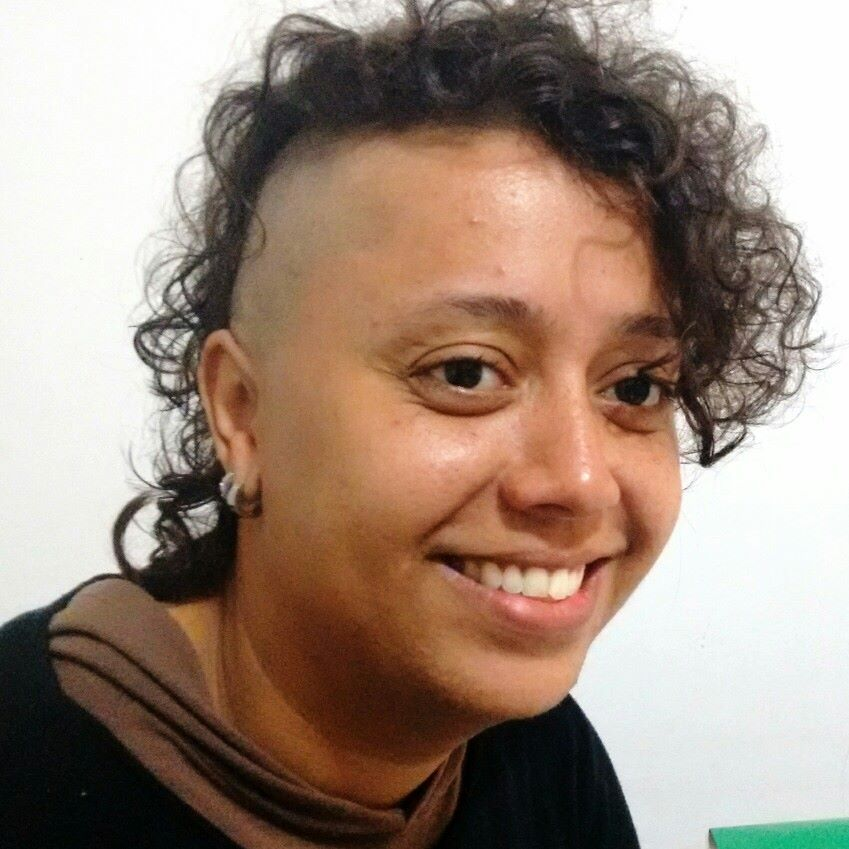
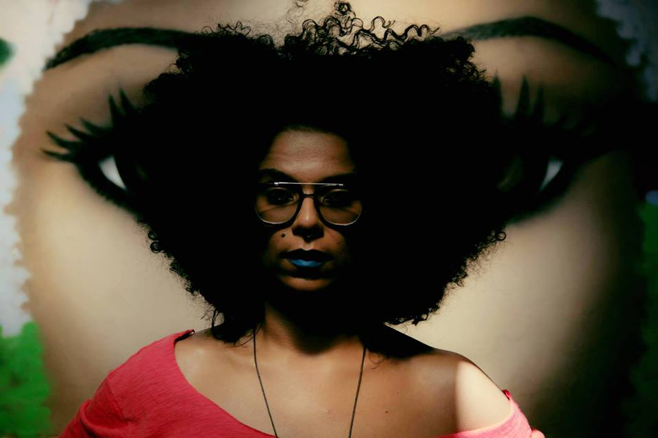

Funções / Direção
As informações de cada perfil são de responsabilidade das profissionais.
Você quer conhecer profissionais de quais estados?
Marcar/Desmarcar todos
CARREGANDO ...
 Amanda Duarte (AL)
Amanda Duarte (AL)
Amanda Duarte
Maceió (AL)
amandad.mov@gmail.com
Comunicadora social com habilitação em Jornalismo, graduada pela Universidade Federal de Alagoas. Começou a se aproximar do Cinema e do Audiovisual em 2012 e, desde então, tem atuado nas áreas de produção, difusão e formação. É feminista, idealista social e militante cultural.
http://amandaduarte.jor.br
Outras atividades de Amanda Duarte
Assistência de Produção
|
Exibição
|
Oficinas e cursos livres |
Programação e curadoria |
Roteiro
Amostra de vídeo
Amanda Lopes (SP)
Amanda Lopes
34 anos | São Paulo (SP)
amanda_lopes0@hotmail.com
Formada em Administração de Empresas e professora de matemática. Atuei por 10 anos na área de Recursos Humanos. Graduanda do último ano em Comunicação Social com ênfase em Cinema. Persistente, bastante curiosa e proativa. Me sinto uma eterna aluna. Crio histórias há 20 anos, porém somente nos últimos 4 anos encarei o cinema e pude participar de mais de 25 curtas metragens. FIES, zero recursos, muita fé e alguns amigos, arrisquei nos meus projetos próprios. Empreendedora atualmente desenvolvo a plataforma Mulheres Audiovisual voltada para distribuição de filmes feitos por mulher e vagas direcionadas a esse público.
http://amandalopesfilmes.wixsite.com/portfolio
Outras atividades de Amanda Lopes
Assistência de Direção |
Captação de Recursos |
Coordenação de Projeto |
Edição |
Exibição |
Oficinas e cursos livres
|
Produção |
Programação e curadoria |
Roteiro
Amostra de vídeo
 Anna Andrade (PE)
Anna Andrade (PE)
Anna Andrade
32 anos | Recife (PE)
anna.andrade@gmail.com
Bacharel em Produção Cultural (IFRJ) e Pós Graduanda em Gestão de Projetos (FG), é produtora cultural independente e atua nas áreas de audiovisual, literatura e música. No Audiovisual, trabalhou como produtora do longa-metragem "A Noite Escura da Alma" (Henrique Mendes Dantas, BA, 2015) e dos curtas-metragem "Avenida Presidente Kennedy" (2014), "Milagres" (2015) e "Frequências" (2016), dirigidos por Adalberto Oliveira (PE). Também traduziu e legendou os curtas "Tarja Preta" (Márcio Farias, PE, 2015), e "Os Filmes que Moram em Mim" (Caio Sales PE, 2015) . Atualmente está na pré produção de seu primeiro curta metragem, "Entremarés", aprovado no 9º Edital Funcultura Audiovisual.
https://www.facebook.com/milagresdoc/
Outras atividades de Anna Andrade
Captação de Recursos |
Coordenação de Projeto |
Exibição |
Legendagem |
Produção
 Anna Paula Furtado (SP)
Anna Paula Furtado (SP)
Anna Paula Furtado
21 anos | São Paulo (SP)
furtadoannapaula@gmail.com
Estou no oitavo semestre da faculdade de Cinema. Dirijo e faço o roteiro do meu TCC, um documentário sobre resistência feminina no Samba. Busco atuar nessas áreas, de cultura popular e questões de gênero e raça. Estou no começo da minha carreira mas sonho grande e não paro quieta, estou sempre à disposição!
Outras atividades de Anna Paula Furtado
Continuidade |
Fotografia Still |
Produção |
Roteiro
Amostra de vídeo
 Beatriz Lima (RJ)
Beatriz Lima (RJ)
Beatriz Lima
22 anos | Rio de Janeiro (RJ)
beatriz@caseirasproducoes.art.br
Olá. Sou estudante universitária de cinema na UFF, trabalho no mercado como produtora cultural, mas gosto mesmo de assistência de direção e realização de projetos coletivos.
https://www.facebook.com/caseirasprod/?fref=ts
Outras atividades de Beatriz Lima
Produção | Roteiro
Amostra de vídeo
 Beatriz Vieirah (BA)
Beatriz Vieirah (BA)
Beatriz Vieirah
24 anos | São Félix (BA)
b.vieirah1@gmail.com
Graduanda em Cinema e Audiovisual pela Universidade Federal do Recôncavo da Bahia, ativista negra feminista, fotógrafa, coordenadora e idealizadora do Projeto Seminário Cinema Negro Brasileiro. Tem experiência no cinema e vídeo como filmmaker, assistente de direção, câmera, roteiro e preparação de atores, com destaque para as obras cinematográficas, Lápis de Cor, O Cadeado, Entre Passos, Sinfonia de Uma Pequena Cidade, Noite de Baile, telefilme O milagre dos pássaros e o videoclipe Mau Achismo. Ministrou oficinas de Produção de Vídeo e Cinema Negro. Suas pesquisa gira em torno de Mulheres Negras no Cinema. E atualmente está produzindo o filme Em busca de Lélia, enquanto diretora.
Outras atividades de Beatriz Vieirah
Direção de fotografia |
Pesquisa e desenvolvimento |
Roteiro |
Oficinas e cursos livres
Amostra de vídeo
 Bia Rodrigues (Biarritzzz) (PE)
Bia Rodrigues (Biarritzzz) (PE)
Bia Rodrigues (Biarritzzz)
22 anos | Recife (PE)
beabiasoares@gmail.com
Bia Rodrigues, ou como o seu “avatarônimo” se intitula, biarritzzz, é uma artista brasileira que trabalha com vídeo e novas mídias. Nascida em 1994, Bia tem participado de exposições e mostras pelo Brasil afora desde 2013.
http://biarritzzz.hotglue.me
Outras atividades de Bia Rodrigues (Biarritzzz)
Animação |
Edição
Amostra de vídeo
Brenda Ligia Miguel (PE)
Brenda Ligia Miguel
Recife (PE)
brenda.ligia@hotmail.com
Brenda Ligia, atriz de cinema, está em "Todas as Cores da Noite" (Pedro Severien), "As Melhores Coisas do Mundo" (Laís Bodanzky), "Sangue Azul" (Lírio Ferreira), "Bruna Surfistinha" (Marcus Baldini), e outros. Atuou nas séries de televisão "A Mulher do Prefeito" (Rede Globo), "Beleza S/A" (GNT), "9mm SP" (Fox), "Somos Um Só" (TV Cultura), diversos comerciais e videoclipes musicais. Também é apresentadora e cineasta. Estudou no Teatro Escola Macunaíma/SP; atuou em comédias, musicais, infantis e dramas. É formada em Comunicação Social pela Faculdade Oswaldo Cruz/SP, cursou Ciências Sociais na University of the West Indies (Trinidad & Tobago) e Francês em Vevey (Suíça).
http://brendaligia.blogspot.com.br
Outras atividades de Brenda Ligia Miguel
Atuação |
Dublagem |
Edição |
Roteiro
Amostra de vídeo
 Carem Abreu (MG)
Carem Abreu (MG)
Carem Abreu
46 anos | Belo Horizonte (MG)
caremabreu@gmail.com
Cineasta, jornalista e capoeirista angoleira. Atuo desde 1996 nos setores Audiovisual e de Culturas Populares como Pesquisadora, Gestora Cultural, Diretora, Roteirista, Produtora Executiva, de Elenco e de Set. Idealizadora da Mostra CineAfroBH.
ATUAÇÃO PROFISSIONAL: ATOS CENTRAL DE IMAGENS. youtube.com/user/atosimagens
Desde 2007: Produtora Executiva, Diretora e Roteirista Atuais 2015: produção executiva do filme e seriado CIDADE DO SOL (Ação, 2015MG, Guto Aeraphe) webseriados.tv (vimeo.com/ondemand/webseriecidadedosol).
PRÊMIO: novembro 2015 Edital de Intercâmbio do MINC > Oficina de Produção Audiovisual em DAKAR, Senegal, na Associação Batuk de Comunicação e Cultura.
http://www.mostracineafrobh.com
Outras atividades de Carem Abreu
Exibição |
Ensino superior |
Oficinas e cursos livres |
Pesquisa e desenvolvimento |
Produção |
Produção executiva |
Roteiro
Amostra de vídeo
 Carine Fiúza (PB)
Carine Fiúza (PB)
Carine Fiúza
27 anos | João Pessoa (PB)
carinefiuza@gmail.com
Graduanda em Rádio e Tv na Universidade Federal da Paraíba e colaboradora no Laboratório Audiovisual de Produção - LAP que integra o departamento de Cinema e Comunicação da UFPB. Concluiu os curso técnicos de Direção, Ass. de direção e Produção executiva pelo CANNE. Atualmente é Produtora, diretora e fotografa freelancer. Ministra cursos livres de cinema e audiovisual. Como diretora elenca os trabalhos: No escuro (2009), Autonomia Mulheres Rurais (2014), Campanha contra lesbofobia (2016); Como produtora: “Capela” (2014), “O Lendário…” (2014), “Ilha” (2014), “Nó do diabo” (2017). Além dos DVDs de “Chico César” para o Canal Brasil e o “Quinteto convida” para Tv UFPB.
https://www.facebook.com/carine.fiuza.3
Outras atividades de Carine Fiúza
Assistência de direção |
Assistência de fotografia |
Cineclubismo |
Coordenação de projeto |
Exibição |
Fotografia still |
Gerência de mídia |
Oficinas e cursos livres |
Pesquisa e desenvolvimento |
Produção
Amostra de vídeo
 Carol Rodrigues (SP)
Carol Rodrigues (SP)
Carol Rodrigues
32 anos | São Paulo (SP)
rsscarol@gmail.com
Formada em Ciências Sociais (Unicamp) e em Audiovisual (Usp). Paralelo a graduação, especializou-se como roteirista através de cursos livres em centros culturais. Em 2014, ganhei o edital Curta-Afirmativo, para realizar o curta “A boneca e o silêncio”, sobre a solidão de uma menina ao tomar a decisão de fazer um aborto. O filme participou de diversos festivais nacionais e internacionais, tendo vencido prêmios de Melhor Curta-Metragem em São Paulo, Belo Horizonte, Portugal e na Polônia, além de Prêmio de Melhor direção na Índia e de sido um dos finalistas como Melhor roteiro na Romênia. Foi roteirista e montadora da web série Zona SSP que está em finalização. Integra também a equipe da websérie Empoderadas enquanto roteirista, diretora e editora. Além disso, está na sala de roteiristas de uma série infantil que está sendo produzida pela Mixer-SP e tem lançamento previsto para outubro de 2017.
http://rsscarol.wixsite.com/portfolio
Outras atividades de Carol Rodrigues
Edição |
Oficinas e cursos livres |
Roteiro
Amostra de vídeo
 Cíntia Lima (PE)
Cíntia Lima (PE)
Cíntia Lima
32 anos | Recife (PE)
cintiaznlima@gmail.com
Graduanda em Artes Visuais pela UFPE, iniciou a sua carreira como artista visual em 2012, como codiretora e performer da videoarte Maldita Poesia. Desde então, tem se dedicado principalmente à criação de performances que mesclam diferentes linguagens e técnicas artísticas, especialmente as visuais. Com isso, suas obras comumente estão presentes tanto em exposições de arte como em mostras e festivais de cinema. Em 2014, junto a outras artistas, fundou o coletivo DALE (Diretório Artístico de Liberdade Estética). Junto ao coletivo foi codiretora, performer do curta “Rito”. Também em 2014, desenvolveu ""Teorema da Permanência"", uma serie de performances sobre memória e gênero apresentada também em 2015, em Recife. Concilia seus trabalhos no campo das artes visuais com a carreira de atriz.
https://cintiazlima.wordpress.com/
Outras atividades de Cíntia Lima
Atuação |
Direção de arte |
Produção
Amostra de vídeo | Senha: dalerito
 Cynthia Falcão (PE)
Cynthia Falcão (PE)
Cynthia Falcão
45 anos | Olinda (PE)
cynfalcao@gmail.com
Cynthia Falcão é realizadora e radialista pernambucana, há mais de dez anos vem atuando ativamente com gestão e representação política no audiovisual pernambucano, contribuiu com as entidades de classe do estado, participando da elaboração de ferramentas importantes para o desenvolvimento do audiovisual em Pernambuco como a Lei e o Conselho Consultivo do Audiovisual. É coordenadora da Massangana Multimídia Produções, unidade que faz a gestão do Centro Audiovisual Norte-Nordeste (Canne) na Fundação Joaquim Nabuco.
Amostra de vídeo
 Danddara (RJ)
Danddara (RJ)
Danddara
47 anos | Rio de Janeiro (RJ)
dandarah@rocketmail.com
DANDDARA nasce em 1968; cresce na cena cultural do Samba carioca. É cineasta, performer, escritora e artista florestal premiada no Brasil e nos EUA. Sua arte ambientalista explora as Florestas Brasileiras em várias mídias. Em 1985, estreia no palco em musical de Bia Lessa. Em 1988, estreia no livro em antologias da Oficina Literária Ivan Proença; no mesmo ano funda o TEATRO FLORESTAL DO RIO DE JANEIRO. Na RIO-92, seu show Amor à Natureza com Henrique Cazes apresenta repertório de EcoSambas em evento cultural oficial. Muda pra Nova York em 1993. Em 2000 com Gurufim na Mangueira, estreia no cinema e se torna a primeira mulher negra cineasta do Brasil.
https://branded.me/danddara
Outras atividades de Danddara
Atuação |
Edição |
Roteiro
Amostra de vídeo
 Deka Carvalho (SP)
Deka Carvalho (SP)
Deka Carvalho
36 anos | São Paulo (SP)
kilometroprodutora@gmail.com
Sou Deka Carvalho, 36 anos, mãe, preta, favelada, produtora de videos e fotos. Sou responsável pelo audiovisual no estado da CUFA SP (Central Única das Favela de São Paulo) , sou proprietária da produtora Kilômetro na zona leste de São Paulo. Meu objetivo é mostrar o território favela no seu melhor contexto verdadeiro e nos colocarmos como protagonistas em todas as esferas.
https://www.facebook.com/kilometroprodutora/
Outras atividades de Deka Carvalho
Assistência de Direção |
Direção de Arte |
Edição |
Exibição |
Pesquisa e desenvolvimento |
Preparação de Elenco |
Produção |
Produção Executiva |
Roteiro
Amostra de vídeo
 Ellen Paes (RJ)
Ellen Paes (RJ)
Ellen Paes
33 anos | Rio de Janeiro (RJ)
paes.ellen@gmail.com
Formada em Jornalismo com especialização em Telejornalismo, atuo como repórter e sou diretora de um projeto de documentário em curso, o #agoraéquesãoelas.
Outras atividades de Ellen Paes
Roteiro
Amostra de vídeo
 Iris Regina (PE)
Iris Regina (PE)
Iris Regina
31 anos | Olinda (PE)
irisregin@gmail.com
Sou nascida no interior de São Paulo onde fiz faculdade de Artes Visuais, mas estou em Pernambuco desde o ano de 2012, onde fiz algumas especializações na área de designer gráfico e hoje dou aula de educação popular na área. Aqui me apaixonei pelo cinema e logo comecei com o cineclubismo e até hoje faço parte do Cineclube Bamako com foco no cinema africano e diáspora Cursos de Roteiro com Marcelo Paes de Carvalho, Laboratório Audiovisual com Pedro Severien, alguns cursos de captação e fotografia, áudio e produção. Fiz curadoria e juri em alguns festivais do estado como o Festival de Cinema de Triunfo, Recifest, Festicine e a I Semana de Comunicação Popular de Recife. Trabalhei na produção da mostra o CRUA (Cinema Rural Andarilho) que aconteceu em algumas cidades do interior de Pernambuco e Paraíba, também na mostra Olhar do Alto no Festival Olinda Coco Zumbi. Integro a produtora Studio Ru@ do CCJ-Recife (Centro de Comunicação e Juventude).
Outras atividades de Iris Regina
Assistência de Direção |
Assistência de Fotografia |
Cineclubismo |
Continuidade |
Design gráfico |
Pesquisa e desenvolvimento |
Programação e curadoria |
Roteiro
Amostra de vídeo
 Issis Valenzuela (SP)
Issis Valenzuela (SP)
Issis Valenzuela
33 anos | São Paulo (SP)
issis@tabuleirofilmes.com.br
Diretora e produtora de audiovisual. Sócia da Tabuleiro Filmes.
http://www.tabuleirofilmes.com.br
Outras atividades de Issis Valenzuela
Produção
Amostra de vídeo
 Izabel Neiva (SP)
Izabel Neiva (SP)
Izabel Neiva
40 anos | Guarulhos (SP)
izabel_neiva@hotmail.com
Sou Bacharel em Artes Cênicas pela Escola Celia Helena, licenciada em artes com habilitação em teatro pela Faculdade Paulista de Artes, MBA pós graduada em cinema pela Lafilm Institute, técnica em atuação e direção pelo Inst Stanilavisk. Trabalhos: Assist Direção Longa metragem Off Line, Direção/Produção e atuação curta A Utima Chance, Direção e Produção Curta O Menino da moeda (proj em fase de captação). Dezenas de curtas como atriz, no teatro trabalhei com os diretores: Marco Antônio Brás, Claudia Schapira, Bete Dorgam, Simone Boer.
Outras atividades de Izabel Neiva
Assistência de Direção |
Atuação |
Continuidade |
Preparação de Elenco |
Produção |
Roteiro
Amostra de vídeo
 Juliana Lima (PE)
Juliana Lima (PE)
Juliana Lima
Recife (PE)
juliana.cine.musica@gmail.com
É realizadora audiovisual, Vice-presidente da ABD-PE/APECI e integrante do Mulheres no Audiovisual de Pernambuco (MAPE), onde realiza vídeos sobre demandas de gênero e raça. Escreve e dirige roteiros para documentários e vídeo clipes. Seu primeiro documentário em curta-metragem, Psiu! (2014), em que assina argumento, codireção e roteiro, recebeu vários prêmios de melhor filme em diversos festivais pelo Brasil. Seu clipe, Show de Rock (2015), com o rapper Galo de Souza foi premiado pelo FestClip (SP). Atualmente cursa Mestrado em Educação na UFPE e está na produção do seu próximo documentário.
Outras atividades de Juliana Lima
Coordenação de Projeto |
Pesquisa e desenvolvimento |
Produção |
Roteiro
Amostra de vídeo
 Karoline Maia (SP)
Karoline Maia (SP)
Karoline Maia
22 anos | São Paulo (SP)
karolinemaias@gmail.com
Sou formada em Rádio e TV, criadora e produtora das web-séries Nossa História Invisível e Cultura das Bordas. No audiovisual, atuo na direção de fotografia, edição e finalização.
http://maiakarol.tumblr.com/jardimcarolina
Outras atividades de Karoline Maia
Direção de fotografia |
Edição |
Produção
Amostra de vídeo
Keila Serruya (AM)
Keila Serruya
Manaus (AM)
keilaserruya@gmail.com
Formada em comunicação social, manauara, diretora audiovisual, artista visual e produtora. Diretora de obras audiovisuais “Nessa Cidade Todo Mundo Já Bebeu na Bica” e “ASSIM”, que circularam em festivais nacionais e internacionais e hoje estão sendo exibidos em canal fechado. Produtora e assistente de direção em projetos series, curtas, longas metragens, espetáculos e intervenções. Esteve a frente de projetos como MIVA - Mostra Internacional de Videodança da Amazônia, Até o Tucupi, Papo por frame, série de TV na Boca do Povo, serie de TV infantil Buzzz&Bizz, Noite Negra, Grito Rock Manaus dentre outros. Atualmente faz parte do grupo Picolé da Massa e é gestora do DaVárzea das Artes.
Outras atividades de Keila Serruya
Assistência de Direção |
Cineclubismo |
Continuidade |
Exibição |
Edição |
Fotografia Still |
Pesquisa e desenvolvimento |
Produção
Amostra de vídeo
 Lindiwe Aguiar (BA)
Lindiwe Aguiar (BA)
Lindiwe Aguiar
Salvador (BA)
ogunjavideos@ogunjavideos.com.br
Videomaker e Jornalista formada pelo Liceu de Artes e Ofícios da Bahia, foi educadora de vídeo na Fundação Cidade Mãe por 8 anos. Coordenou e ministrou oficinas de produção de mídias em diversas ONG’s e instituições de ensino na Bahia. Em 2015 Lindiwe Aguiar recebeu o Troféu Bronze do Prêmio Mulher de Negócios Sebrae.
http://www.ogunjavideos.com.br
Outras atividades de Lindiwe Aguiar
Coordenação de Projeto |
Correção de cor |
Desenho de efeitos |
Edição |
Oficinas e cursos livres |
Produção
Amostra de vídeo
 Lygia Pereira (SP)
Lygia Pereira (SP)
Lygia Pereira
24 anos | Campinas (SP)
lygiapsc@gmail.com
Graduanda do último semestre do curso de Midialogia na Unicamp, possui experiência em produções audiovisuais (captação de imagem, direção e produção), sobretudo em documentários. Atuou na direção, roteiro e montagem do curta "CEP 05300"; na assistência de produção do documentário "Jogo Truncado", produzido pelo Canal Futura; na co-edição do coletivo de mídia independente Ô, Xavante!. Possui experiência com produção cultural, tendo trabalhado na 7ª Bienal de dança do Sesc de Campinas.
https://lygiapereirablog.wordpress.com/
Outras atividades de Lygia Pereira
Assistência de direção |
Assistência de fotografia |
Continuidade |
Coordenação de projetos |
Direção de fotografia |
Edição |
Exibição |
Fotografia still |
Pesquisa e desenvolvimento |
Produção
Amostra de vídeo
 Lilian Santiago (SP)
Lilian Santiago (SP)
Lilian Santiago
46 anos | Salto (SP)
lilianssantiago2014@gmail.com
Lilian Solá Santiago é historiadora e Mestre e Integração da América Latina pela USP (Universidade de São Paulo) e atua há mais de 15 anos na área de produção e ensino audiovisual. Atualmente é professora-cineasta do curso de Cinema do CEUNSP - Centro Universitário Nossa Senhora do Patrocínio – Salto /SP, onde coordena a Produtora Experimental do curso, a Kimera Filmes. Entre suas realizações audiovisuais estão os documentários "Fios do Passado" (2015), “Batuque de Graxa” (2012); “Eu tenho a palavra” (2010) ; "Roda o Tereré" (2009); o doc-ficção “Graffiti” (2008); “Balé de Pé no Chão”(2006) e o filme documentário “Família Alcântara” (2005), com Daniel Santiago.
Outras atividades de Lilian Santiago
Ensino superior |
Produção |
Roteiro
Amostra de vídeo
 Luciana Oliveira (SE)
Luciana Oliveira (SE)
Luciana Oliveira
26 anos | Aracaju (SE)
luoliveira.vieira@gmail.com
Cineasta. Graduada em Audiovisual e Mestranda em Cinema pela Universidade Federal de Sergipe. Pesquisa o cinema de autorrepresentação realizado por mulheres negras atualmente no Brasil.
Outras atividades de Luciana Oliveira
Figurino |
Produção
Amostra de vídeo
 Mariani Lima (SP)
Mariani Lima (SP)
Mariani Lima
25 anos | Campinas (SP)
mariani_lima@hotmail.com
Formada em Cinema e Audiovisual na UFPel, atualmente trabalho como cinegrafista e editora freelancer em Campinas. Também sou Audiodescritora certificada.
http://www.vimeo.com/mariani
Outras atividades de Mariani Lima
Assistência de Direção |
Atuação |
Direção de Fotografia |
Edição |
Fotografia Still |
Oficinas e cursos livres |
Roteiro
Amostra de vídeo
 Marina Kerber (RS/SP)
Marina Kerber (RS/SP)
Marina Kerber
25 anos | Porto Alegre (RS) e São Paulo (SP)
marinatkerber@gmail.com
Mestra em Meios e Processos Audiovisuais na USP. Bacharel em Realização Audiovisual pela UNISINOS. Tem experiência profissional em Cinema, principalmente, como diretora, diretora de arte, figurinista e animadora, tendo experiência em curta-metragens, longa-metragens e videoclipes. Já participou de festivais nacionais e internacionais de cinema, principalmente direcionados às técnicas de animação (Upto3/Canadá, Monstra Festival/Portugal) e ganhou prêmios em festivais como o Festival do Minuto (Recheio de Tinta, Pequena Porção vermelha e Martina) e o 1º Festival Luz de Cinema Latino-americano (Balão Selvagem).
http://be.net/marinakerber
Outras atividades de Marina Kerber
Animação |
Atuação |
Direção de Arte |
Figurino |
Fotografia still
Amostra de vídeo
 Monique Rodrigues (RJ)
Monique Rodrigues (RJ)
Monique Rodrigues
Rio de Janeiro (RJ)
monique010982@gmail.com
Sou formada em Cinema com especializações em roteiro e pesquisa, tendo experiência em festivais, mostras, curta metragens e produção de conteúdo para web.
Outras atividades de Monique Rodrigues
Cineclubismo |
Coordenação de Projeto |
Crítica |
Direção de Arte |
Pesquisa e desenvolvimento |
Produção |
Programação e curadoria |
Roteiro
Amostra de vídeo
 Nadia Bambirra (RJ)
Nadia Bambirra (RJ)
Nadia Bambirra
51 anos | Rio de Janeiro (RJ)
nadiabambirra@hotmail.com
Diretora, atriz, produtora e treinadora de atores. Atualmente dando aula de interpretacao para camera, na escola Wolf Maya e ensaiando o proximo espetaculo.
http://curtaviver.blogspot.com
Outras atividades de Nadia Bambirra
Atuação |
Preparação de elenco |
Produção
Amostra de vídeo
 Naira Evine (AL)
Naira Evine (AL)
Naira Evine
23 anos | Maceió (AL)
naira.nai@gmail.com
Pós Graduanda em Cinema e Linguagem Audiovisual, comunicóloga formada em Rádio e TV pela UESC. Convive com o mundo da arte desde pequena, com 13 anos aprendeu com seu pai a fotografar e ao longo dos anos foi se profissionalizando na área. Tem experiência profissional em produções audiovisuais, TV, fotografia e docência. É documentarista, diretora , diretora de fotografia, assistente de direção, roteirista, videomaker, editora de imagens e fotógrafa. Entende a grande importância de usar o audiovisual como ferramenta de combate às opressões. Se identifica como mulher negra e lésbica.
Outras atividades de Naira Evine
Direção de fotografia |
Edição |
Fotografia still |
Gerência de mídia
Amostra de vídeo
 Natalie Matos (MG)
Natalie Matos (MG)
Natalie Matos
21 anos | Belo Horizonte (MG)
natalie.m.moura@gmail.com
A única certeza que mora em mim é a de que a cada passo aprendo algo novo e construo minha identidade. Como uma árvore que cresce regada ao amor e às dificuldades, dá bons frutos e flores, mas também amadurece antes da hora e às vezes até mesmo cai, mas, sempre lembra que tudo que se vive fortalece suas raízes. E sempre quando eu precisar vou ao meu interior e discuto comigo, para entender esse meu eu que às vezes recusa falar e prefere apenas sentir. Gradua em Cinema e Audiovisual e Técnico em Artes Visuais, hoje tenho projetos de visibilidade ao protagonismo da mulher preta e a juventude periférica.
http://nataliem-moura.wixsite.com/nataliematos
Outras atividades de Natalie Matos
Animação |
Assistência de Direção |
Captação de Recursos |
Captação de Som |
Cenografia |
Continuidade |
Correção de cor |
Direção de Arte |
Direção de Fotografia |
Edição |
Fotografia Still |
Iluminação |
Mixagem e efeitos sonoros |
Pesquisa e desenvolvimento |
Preparação de Elenco |
Produção |
Roteiro
Amostra de vídeo
 Naymare Azevedo (RN)
Naymare Azevedo (RN)
Naymare Azevedo
24 anos | Natal (RN)
naymaresazevedo@gmail.com
Naymare Azevedo, produtora executiva, gestora de políticas públicas e marketing cultural. Diretora criativa do Espaço Criativo Aayabá e coordenadora do projeto de formação criativa do AFROTONIZAR.
Outras atividades de Naymare Azevedo
Assistência de Direção |
Atuação |
Captação de Recursos |
Cineclubismo |
Coordenação de Projeto |
Oficinas e cursos livres
|
Pesquisa e desenvolvimento |
Produção |
Produção executiva
Amostra de vídeo
 Pricilla Costa (PA)
Pricilla Costa (PA)
Pricilla Costa
23 anos | Belém (PA)
costa.pricilla@hotmail.com
Idealizadora e Fundadora do Coletivo Audiovisual Tudo Preto!, em Belém do Pará.
Outras atividades de Pricilla Costa
Assistência de fotografia |
Continuidade |
Direção de fotografia |
Roteiro
Amostra de vídeo
 Priscila Oliveira (SP)
Priscila Oliveira (SP)
Priscila Oliveira
28 anos | Valinhos (SP)
priscifch@gmail.com
Sou formada em Ciências Sociais e Midialogia, pesquiso direção de criança para cinema no curso Mestrado em Artes da Cena. Minha formação e experiências estão voltadas para roteiro e direção, mas gosto de ampliar meus conhecimentos teóricos e práticos em outras áreas do audiovisual. Também tenho interesse em trabalhos que envolvam o negro e a mulher no cinema (na frente e atrás da câmera), principalmente em relação à construção de personagens.
https://www.facebook.com/ameiavista
Outras atividades de Priscila Oliveira
Assistência de Direção |
Ensino superior |
Figurino |
Fotografia Still |
Gerência de Mídia |
Oficinas e cursos livres |
Pesquisa e desenvolvimento |
Preparação de Elenco |
Produção |
Programação e curadoria |
Roteiro
Amostra de vídeo
 Quézia Lopes (RJ)
Quézia Lopes (RJ)
Quézia Lopes
29 anos | Niterói (RJ)
queziamaria@yahoo.com.br
Bacharela em Cinema e Audiovisual pela Universidade Federal Fluminense (UFF), com experiência como diretora, roteirista, produtora, editora e assistente de direção e de produção, no cinema e audiovisual independentes.
https://www.facebook.com/queziamarialopes
Outras atividades de Quézia Lopes
Assistência de Direção |
Cineclubismo |
Coordenação de Projeto |
Crítica |
Edição |
Pesquisa e desenvolvimento |
Produção |
Programação e curadoria |
Roteiro
Amostra de vídeo
 Renata Martins (SP)
Renata Martins (SP)
Renata Martins
São Paulo (SP)
recine12@gmail.com
Formada em cinema pela universidade Anhembi Morumbi e Pós - Graduada em linguagens da Arte | USP. Diretora e Roteirista do Curta - Aquém das Nuvens / Roteirista da Série Pedro e Bianca. / Idealizadora, Roteirista e Diretora da Websérie Empoderadas. / Dramaturga do Espetáculo - IDA - Coletivo Negro. / Coordenadora e Roteirista do Projeto - RUA NOVE / Coordenadora de desenvolvimento do projeto - Cartas da Terra do Futuro - Websérie sobre Refugiados.
http://www.facebook.com/programaempoderadas/
Outras atividades de Renata Martins
Roteiro
Amostra de vídeo
 Safira Moreira (RJ)
Safira Moreira (RJ)
Safira Moreira
25 anos | Rio de Janeiro (RJ)
safiramoreira1@gmail.com
Safira M. nasceu em Salvador/BA. No primeiro semestre de 2016 formou-se no curso de cinema ofertado pelo Centro Afrocarioca de Cinema (Zózimo Bulbul), onde realizou como assistente de fotografia o curta O Jali. Foi videomaker no videodança do projeto ICÓ, a ser finalizado em nov/2016. Participou da oficina Videodança e as poéticas do plano sequencia do festival Dança em Foco, onde aprimorou as técnicas e teorias acerca do videodança. E atualmente dirige o videodança Corpo-Veleiro. E desenvolve mais dois projetos individuais de audiovisual Projétil e Um vestido para Carolina Maria de Jesus, ambos a cerca das vivências/memórias do corpo negro. Estuda na Escola de Cinema Darcy Ribeiro.
http://cargocollective.com/safiramoreira
Outras atividades de Safira Moreira
Assistência de Fotografia
|
Direção de Fotografia
|
Fotografia Still
|
Pesquisa e desenvolvimento
Amostra de vídeo
 Thais Scabio (SP)
Thais Scabio (SP)
Thais Scabio
39 anos | São Paulo (SP)
thaisscabio@gmail.com
Diretora, Produtora, educadora e cineclubista. Coordenadora dos projetos "JAMAC Cinema Digital" e " coletivo Mascate Cineclube", em São Paulo. Trabalha com cinema digital desde 2002. Graduada em Comunicação Social, Especialista em Direção de Cinema e Video pela ELCV de Santo André. Sócia-fundadora da produtora Cavalo Marinho Audiovisual, foi produtora executiva da animação "Graffiti Dança, ganhadora do prêmio de Melhor Curta Brasileiro do Anima Mundi 2013. Atualmente produz e dirige a websérie "Terror em um minuto" e esta em desenvolvimento de seu primeiro longa-metragem.
http://www.cavalomarinhoaudiovisual.com
Outras atividades de Thais Scabio
Cineclubismo |
Oficinas e cursos livres |
Produção |
Produção executiva |
Roteiro
Amostra de vídeo
 Thamires Vieira (BA)
Thamires Vieira (BA)
Thamires Vieira
23 anos | Cachoeira (BA)
thamiresvieirafjl@gmail.com
Thamires Vieira é realizadora audiovisual; membro do coletivo TELA PRETA, movimento de cinema negro, graduanda em Cinema pela UFRB, membro do Cineclube Mario Gusmão.
Outras atividades de Thamires Vieira
Assistência de Direção |
Cineclubismo |
Coordenação de Projeto |
Pesquisa e desenvolvimento |
Produção Executiva |
Programação e curadoria

Amostra de vídeo
 Ticiane Simões (AL)
Ticiane Simões (AL)
Ticiane Simões
33 anos | Maceió (AL)
ticiane.santana@hotmail.com
Sou atriz em Alagoas, portanto necessito exercer várias outras funções para sobreviver. Sou negra e indígena, embora admita não ter um aprofundamento de minha árvore genealógica. Sou "multifacetaria", inquieta e guerreira. Já fiz, e faço ainda, muitos trabalhos para o teatro e nos últimos anos venho me permitindo descobrir o cinema. Bem, sempre é mais fácil falar de um personagem que de mim...